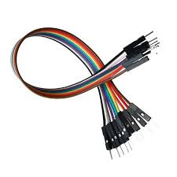

Jumper Wires

🔧 Basic Information
- Name: Jumper Wires
- Purpose: Used to make quick, removable connections between components, breadboards, and microcontrollers
🔌 Types
- Based on Connectors:
- Male to Male (M-M) – Used to connect two female headers (e.g., breadboard to breadboard)
- Male to Female (M-F) – Used to connect a male pin (e.g., Arduino pin to breadboard)
- Female to Female (F-F) – Used to connect two male headers (e.g., sensor to Arduino)
📠Physical Specs
- Length: Typically 10cm, 20cm, or 30cm (can vary)
- Wire Gauge: Around 22 AWG (standard for breadboarding)
- Insulation Material: Usually PVC or silicone (for flexibility)
⚙️ Features
- Flexible and reusable
- Color-coded insulation for easy circuit tracing
- Comes in ribbon form (can peel individual wires)
- No soldering required
🧱 Common Uses
- Connecting components on a breadboard
- Linking sensors/modules to Arduino or Raspberry Pi
- Creating fast temporary circuits for testing/prototyping
↠Back to Components